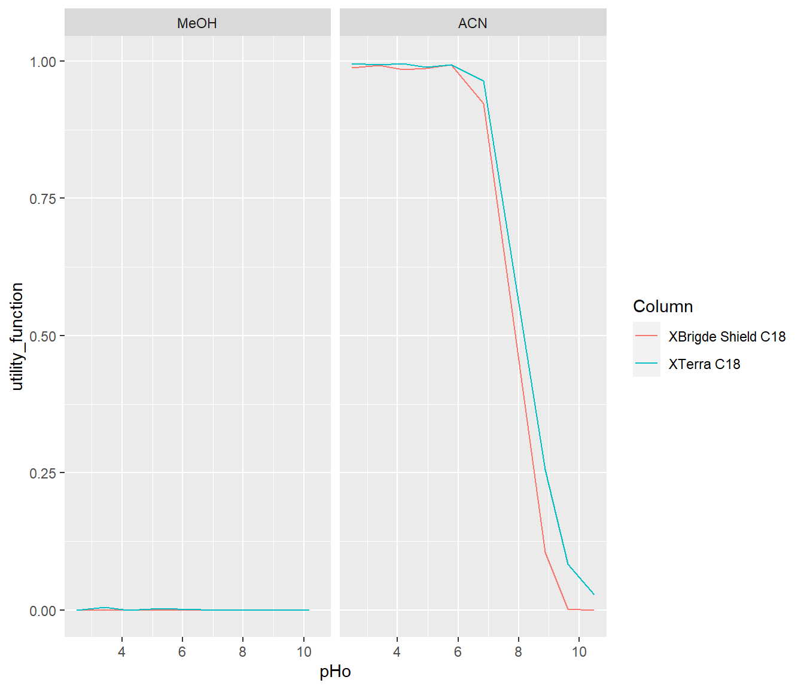

10 Utility function
We test the probability of two compounds separating within a retention window of 2-15 minutes.
10.0.1 Individual
df <- draws_3_qq_df
trCond1 <- df[,which(colnames(df) %in% grep("trCond1", names(df), value = TRUE))]
trCond2 <- df[,which(colnames(df) %in% grep("trCond2", names(df), value = TRUE))]
tr_1 <- t(trCond1)
tr_diff <- tr_1[1:36,]-tr_1[37:72,]
utility1 <- matrix(NA,36,4000)
for(i in 1:36){
for (j in 1:4000){
if(tr_1[i,j]>2 & tr_1[i,j]<15 & tr_1[i+36,j]>2 & tr_1[i+36,j]<15 & (tr_diff[i,j]>0.5 | tr_diff[i,j]< -0.5)){
utility1[i,j]=1
}else{utility1[i,j]=0}
}
}
utility_function1 <-apply(utility1, MARGIN = 1, FUN = mean)
tr_1 <- t(trCond2)
tr_diff <- tr_1[1:36,]-tr_1[37:72,]
utility2 <- matrix(NA,36,4000)
for(i in 1:36){
for (j in 1:4000){
if(tr_1[i,j]>2 & tr_1[i,j]<15 & tr_1[i+36,j]>2 & tr_1[i+36,j]<15 & (tr_diff[i,j]>0.5 | tr_diff[i,j]< -0.5)){
utility2[i,j]=1
}else{utility2[i,j]=0}
}
}
utility_function2 <-apply(utility2, MARGIN = 1, FUN = mean)
utility_function <-c(utility_function1,utility_function2)
mod3_plot <- rep(rep(c(2,1),each=2),9*2)
temp_plot <- rep(temp,9*2*2)
Column <- rep(c("XBrigde Shield C18","XTerra C18"),each=36)
pHo <- rep(pHo_1,2)
data_to_plot <- as.data.frame(cbind(utility_function, mod3_plot,temp_plot,pHo, Column))
data_to_plot$utility_function <- as.numeric(data_to_plot$utility_function)
data_to_plot$pHo <- as.numeric(data_to_plot$pHo)
mod.labs <- c("ACN","MeOH")
names(mod.labs) <- c('2','1')
ggplot(data_to_plot[which(data_to_plot$temp_plot==25),])+
geom_line(aes(x = pHo, y = utility_function, color =Column))+
facet_grid(~mod3_plot,labeller = labeller(mod3_plot=mod.labs))